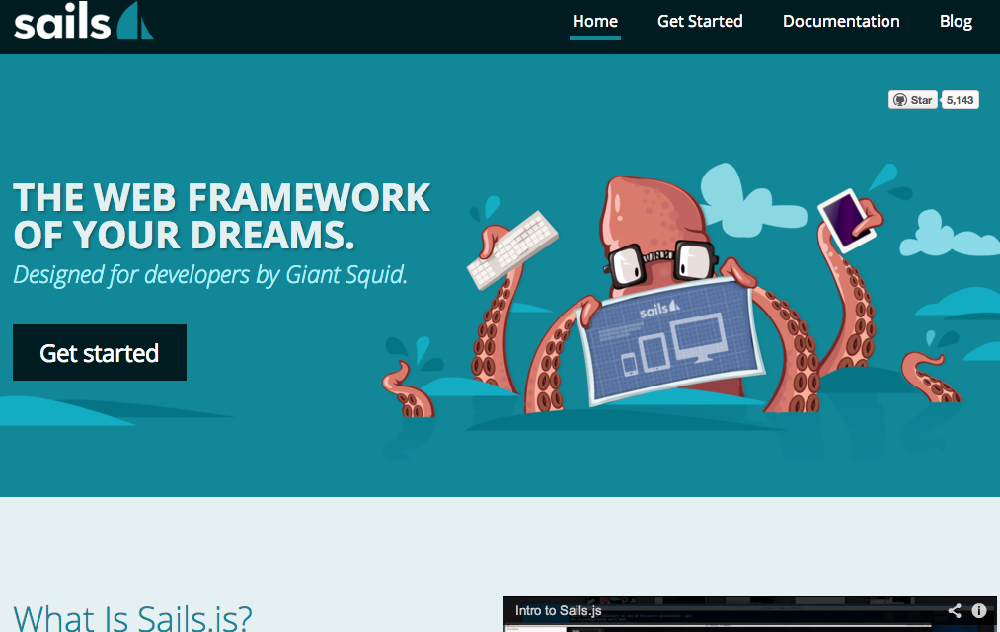
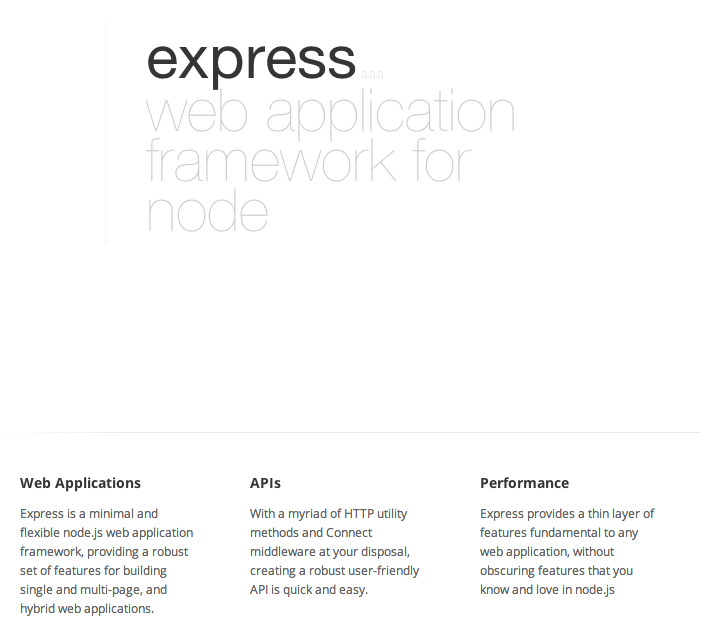

Criando uma webapp com Sails.js
Manoel Quirino Neto
Segundo Meetup paraiba.js
Quem sou?
Front-End na Soda virtual.
GitHub /manoelneto
Twitter @manoel_n
Sails.js
É um framework MVC escrito em cima do express.js bem parecido com o rails.
Utilizar waterline
Restfull
Socket.io
Perfeito para quem quer criar uma api rapida de teste.
Instalação
sudo npm -g install sails
Scaffolding
sails new sailsparaibajs cd sailsparaibajs sails lift
Estrutura
Criando um CRUD
primeiro vamos criar um modelo e o controller de Person
sails generate Person
CRUD
Create
POST http://127.0.0.1:1337/person
{
"name": "Manoel",
"idade": "21",
"sexo": "masculino"
}
CRUD
Retrieve
GET http://127.0.0.1:1337/person GET http://127.0.0.1:1337/person/1
CRUD
Update
PUT http://127.0.0.1:1337/person/1
{
"cargo": "Desenvolvedor Web",
"idade": "22"
}
CRUD
Delete
DELETE http://127.0.0.1:1337/person/1
Sails.js
Agora que vimos o CRUD, vamos ver o MVC
Models
api/models/
Ex: api/models/Cerveja.js
module.exports = {
attributes: {
name: {
type: 'string',
required: true
},
category: {
type: 'string',
defaultsTo: 'sem categoria'
},
price : {
type: 'integer',
max: 100
}
}
}
Veja que você pode setar validadores nos atributos, como também um
valor default caso o campo não for enviado.
Controller
api/controllers/
Ex: api/controller/CervejaController.js
module.exports = {
}
Para a api RESTFull funcionar, é necessário criar um arquivo com o mesmo nome do modelo, seguido de Controller.js.
View
views/NOME_DO_CONTROLLER_SEM_CONTROLLER_E_MINUSCULO/FILE.ejs
Ex: views/cerveja/listagem.ejs
Listagem de cervejas <ul>
<% _.each(cervejas, function(cerveja){ %>
<li>
<p>Nome: <%= cerveja.name %></p>
<% if (cerveja.price) { %>
<p>Preço: <%= cerveja.price %></p>
<% } %>
<p>Categoria: <%= cerveja.category %></p>
</li>
<% }) %>
</ul>
E rota customizável?
Rotas
config/routes.js
Ex: views/cerveja/listagem.ejs
'/listagem' : {
controller : 'CervejaController',
action : 'listagem'
}
'/': {
view: 'user/signup'
},
'post /': 'UserController.createUser',
'/': 'MessageController.inbox',
Rotas
config.controllers.blueprints.actions = true
Rota dinamicamente ligada as controllers
`CervejaController.index` ::::::::::::::::::::::::::::::::::::::::::::::::::::::: `GET /cerveja/:id?` `GET /cerveja/index/:id?` `POST /cerveja/:id?` `POST /cerveja/index/:id?` `PUT /cerveja/:id?` `PUT /cerveja/index/:id?` `DELETE /cerveja/:id?` `DELETE /cerveja/index/:id? `CervejaController.show` ::::::::::::::::::::::::::::::::::::::::::::::::::::::: `GET /cerveja/show/:id?` `POST /cerveja/show/:id?` `PUT /cerveja/show/:id?` `DELETE /cerveja/show/:id?
Controller
Mesmo arquivo api/controller/CervejaController.js
module.exports = {
listagem : function(req, res) {
Cerveja.find().done(function(err, cervejas){
if (err) {
res.view({message: 'Deu erro, oh =x'});
}
return res.view({cervejas: cervejas});
});
}
}
MAAAAASSS ... !!!
Por padrão, tudo pode ser acessado sem autenticação.
Mas a vida, é uma caixinha de surpresas e numa bela manhã de sol, seu chefe diz: bota uma senha pra acessar isso daqui ...
E agora?
Autenticação / Policies
config/policies
Uma middleware para suas views. Só chega na view se você quiser!!!!!
Policies ficam no diretório api/pollicies
# config/policies.js
# A action listagem do controller CervejaController vai passar pela middleware soManoel
CervejaController : {
listagem : 'soManoel'
}
# api/policies/soManoel
var url = require('url');
module.exports = function(req, res, next) {
var url_parts = url.parse(req.url, true);
var query = url_parts.query;
if ( query.usuario !== 'manoel' ) {
return res.forbidden('Você não é Manoel. Se manda.');
}
next();
}
Socket
Socket.io por padrão
Cada ação no model (CRUD) é mandado uma messagem aos sockets connectados
var socket = io.connect();
angular.module('cerveja', [])
.controller('CervejaController', function($scope){
$scope.msg = 'carregando as cervejas';
socket.on('connect', function(){
socket.get('/cerveja', function(cervejas){
$scope.msg = 'Cervejas carregadas';
$scope.cervejas = cervejas;
$scope.$apply();
});
socket.on('message', function(message){
if ( message.model == 'cerveja' ) {
if ( message.verb == 'create' ) {
$scope.msg = 'Cervejas adicionada';
$scope.cervejas.push(message.data);
$scope.$apply();
}
}
});
});
});
Mas você pode também mandar seus eventos.
Página oficial do sails.js (http://sailsjs.org/)
Página oficial do express.js (http://expressjs.com/)
Página oficial do Socket.io (http://socket.io/)